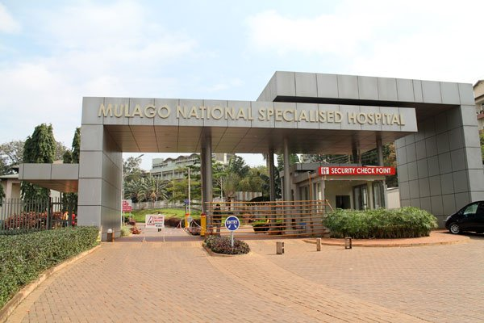

About Mulago Hospital
Over a century of dedicated service to the health and well-being of the people of Uganda and the wider East African region.
Uganda's National Referral Hospital
Mulago National Referral Hospital is the largest public hospital in Uganda, located on Mulago Hill in Kampala, the nation's capital. It serves as the apex health facility in the country's health referral system, receiving patients from all corners of Uganda who require specialist medical attention.
The hospital is operated under the Ministry of Health of the Republic of Uganda and works in close collaboration with Makerere University College of Health Sciences, making it one of the leading academic medical centres in sub-Saharan Africa.
With over 1,790 beds and a workforce of more than 800 medical and support staff, Mulago offers a comprehensive range of clinical services across over 35 departments and speciality units.
Quick Facts
- Founded1913
- LocationMulago Hill, Kampala
- Bed Capacity1,790+
- Annual Patients500,000+
- OwnershipGovernment of Uganda
- AffiliationMakerere University
Mission, Vision and Values
Everything we do at Mulago is guided by a clear commitment to health equity, compassion, and excellence in clinical care.
🎯 Our Mission
To provide quality, equitable, and patient-centred healthcare services at the national referral level; support medical education and research; and lead the development of national health policy through evidence-based practice.
🌈 Our Vision
To be a world-class national referral hospital that delivers excellent healthcare, produces competent health professionals, and advances medical knowledge for the benefit of the people of Uganda and beyond.
★ Our Core Values
- ✓ Integrity and accountability
- ✓ Compassion and dignity
- ✓ Excellence and innovation
- ✓ Teamwork and collaboration
- ✓ Equity and inclusivity
A Legacy Built Over a Century
Mulago Hospital has evolved continuously over more than 100 years, growing from a small colonial dispensary into a major modern medical complex and the cornerstone of Uganda's public health system.
Foundation of the Hospital
Mulago Hospital was established by colonial authorities as a medical facility to serve the population of Kampala and the surrounding Buganda region.
Expansion and Medical Training
The hospital was expanded significantly and began formal collaboration with Makerere University for the training of doctors and health workers.
Independence and Nationalisation
Following Uganda's independence, the hospital was placed under the Government of Uganda and designated as the National Referral Hospital.
Modernisation Programme
A major infrastructure upgrade brought new wards, operating theatres, intensive care units, and updated diagnostic equipment to the hospital.
Continuing to Serve Uganda
Today, Mulago Hospital serves over 500,000 patients annually and continues to lead in healthcare delivery, medical education, and clinical research.


Our Location
Mulago National Referral Hospital is conveniently located on Mulago Hill, just 3 km from the centre of Kampala, Uganda's capital city.
Physical Address
Mulago Hill Road, Mulago Hill
P.O. Box 7051
Kampala, Uganda
How to Get Here
The hospital is accessible by taxi, boda-boda, and private vehicle from any part of Kampala. Follow signs to Mulago Hill from the Northern Bypass or Bombo Road. Free parking is available on the hospital grounds.
Visiting Hours
General wards: Daily, 10:00 AM to 12:00 PM and 4:00 PM to 6:00 PM.
ICU and special units: By arrangement with the ward nurse in charge.
Uganda's Apex Health Facility
As the National Referral Hospital, Mulago occupies a unique and critical position in Uganda's health system.
Referral Hub
Mulago receives complex cases referred from regional referral hospitals, district hospitals, and health centres across all 146 districts of Uganda.
Teaching Hospital
In partnership with Makerere University, we train hundreds of doctors, nurses, midwives, pharmacists, and allied health professionals every year.
Research Centre
Our clinicians and academic partners conduct cutting-edge research on tropical diseases, maternal health, HIV/AIDS, and non-communicable diseases.
Policy Leadership
Mulago contributes to the development of national health policies and clinical treatment guidelines through evidence generated from its clinical programmes.